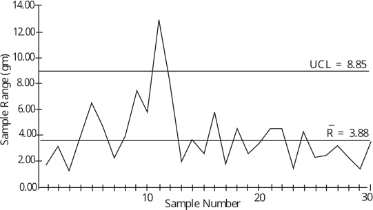

Long description: qcfig10

Alt text: A line graph tracking sample range in grams over thirty sample numbers, showing fluctuations relative to upper and lower control limits.
This description was generated by AI and has not been verified by a human. If you spot an error, please use the feedback link below.
- The vertical axis represents Sample Range in grams, ranging from zero to fourteen grams.
- The horizontal axis represents the Sample Number, marked from zero to thirty.
- The plot displays the sample range for thirty consecutive samples, fluctuating across the visible range.
- Two horizontal lines indicate control limits: the Upper Control Limit (UCL) is marked at 8.85 grams, and a center line (likely the mean, \(\bar{R}\)) is marked at 3.88 grams.
- The sample ranges start at a value between two and three grams for sample one, rising to around six grams by sample five.
- A significant peak is observed around sample ten, where the range reaches approximately 12.8 grams, which is above the UCL of 8.85 grams.
- Following this peak, the sample range drops sharply and fluctuates, generally staying between two and six grams for samples eleven through twenty.
- After sample twenty, the ranges remain relatively low, fluctuating between approximately one and four grams through sample thirty.